온실가스관리기사 (2021-05-15 기출문제)
1과목: 기후변화개론
1. 2012년까지 감축의무를 규정한 교토의정서의 대상기간의 한정과 미국, 중국, 인도 등 온실가스 대량 배출국가의 감축이 포함되지 않은 교토의정서를 대체할 새로운 기후변화 협약의 마련을 위해 채택한 것은?
- 뉴델리 합의문
- 마라케쉬 합의문
- 발리 로드맵
- 도하 합의문
(정답률: 78%)

2. 기후변화협약과 관련된 내용으로 ( )에 알맞은 것은?
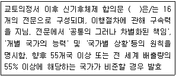
- 파리협정
- 카타르선언
- 칸쿤합의
- 코펜하겐합의
(정답률: 84%)
3. 탄소배출권 계약에 관한 설명 중 ( )에 알맞은 것은?
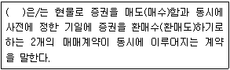
- 레포
- 현물
- 선도
- 옵션
(정답률: 82%)
4. 온실가스에 관한 내용으로 옳지 않은 것은?
- 온실가스는 넓은 파장범위의 적외선을 흡수하여 지구의 온도를 상승시킨다.
- 기후변화협약 제3차 당사국 총회에서 6종의 온실가스에 대해 저감 및 관리대상 온실가스로 규정하였다.
- 화석연료의 연소와 관련된 인간의 활동은 자연적 온실효과를 완화시킨다.
- 지구온난화지수가 클수록 지구온난화에 대한 기여도가 크다는 의미이다.
(정답률: 94%)
5. 탄소 배출권의 종류에 관한 설명으로 옳지 않은 것은?
- AAU : 교토의정서 Annex 1 국가들에게 할당된 온실가스 배출권
- ERU : EU ETS 하에서의 북미 국가들에게 할당된 배출권
- CER : 선진국과 개도국 간의 CDM을 통해서 발생되는 배출권
- RMU : 교토의정서에 명시된 토지이용, 토지이용변화 및 산림활동에 대한 온실가스 흡수원 관련 배출권
(정답률: 80%)
6. 아산화질소 0.1톤, 메탄 2톤, 이산화탄소 15톤을 이산화탄소 상당량톤(tCO2-eq)으로 환산한 값은? (단, 아산화질소(N2O)와 메탄(CH4)의 GWP는 각각 310, 21이다.)
- 56
- 72
- 88
- 96
(정답률: 78%)
7. 기후변화와 관련된 복사법칙 중 "입사하는 모든 복사선을 완전히 흡수하는 가상적인 물체를 흑체라 할 때, 흑체 표면의 단위면적에서 방출되는 에너지의 양은 그 흑체의 절대온도(K)의 4승에 비례 한다"는 법칙은?
- 알베도의 법칙
- 플랑크의 법칙
- 비인의 변위법칙
- 스테판볼츠만의 법칙
(정답률: 96%)
8. 지구대기의 연직구조에 관한 설명으로 옳지 않은 것은?
- 대류권은 기상현상이 일어나는 곳이며, 고도증가에 따라 기온이 증가한다.
- 열대지역에서의 대류권의 두께는 극지방의 대류권 두께보다 두꺼우며, 겨울보다는 여름철에 보다 더 두껍다.
- 성층권 상부의 열은 대부분이 오존에 의해 흡수된 자외선 복사의 결과이며, 오존층은 해발 25km 전후이다.
- 중간권은 고도증가에 따라 온도가 감소한다.
(정답률: 75%)
9. 기후변화관련 국제기구에 관한 설명으로 ( )에 가장 적합한 것은?
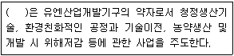
- UNIDO
- UNEP
- UNFCCC
- UNDP
(정답률: 68%)
10. 온실가스 배출권 거래제의 원칙과 가장 거리가 먼 것은?
- 국제협약의 원칙 준수
- 기업이윤의 극대화 추구
- 시장 기능의 최대한 활용
- 국제기준에 부합
(정답률: 96%)
11. 부문별 관장기관이 생성한 국가 온실가스 배출통계를 최종확정하기까지의 절차를 순서대로 옳게 나열한 것은?
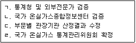
- ㄴ→ㄱ→ㄷ→ㄹ
- ㄴ→ㄷ→ㄹ→ㄱ
- ㄴ→ㄹ→ㄷ→ㄱ
- ㄱ→ㄴ→ㄹ→ㄷ
(정답률: 87%)
12. 국가 기후변화 적응대책을 7개 부문별 적응대책과 3개 적응기반 대책으로 분류할 때, 적응기반 대책에 해당하지 않은 분야는?
- 기후변화감시예측 분야
- 적응산업에너지 분야
- 교육홍보국제협력 분야
- 해양수산업 분야
(정답률: 77%)
13. GWP가 큰 온실가스부터 순서대로 옳게 나열한 것은? (단, IPCC 2차 평가보고서 기준)
- SF6 ＞ CH3F ＞ N2O ＞ C2F6
- SF6 ＞ CH3F ＞ C2F6 ＞ N2O
- SF6 ＞ N2O ＞ CH3F ＞ C2F6
- SF6 ＞ C2F6 ＞ N2O ＞ CH3F
(정답률: 57%)
14. 국제 기후변화 관련 협약이 시대순으로 옳게 나열된 것은?
- 마라케시 합의 → 코펜하겐 합의 → 발리 로드맵 → 칸쿤 합의
- 발리 로드맵 → 코펜하겐 합의 → 칸쿤 합의 → 더반 결과물
- 교토의정서 → 마라케시 합의 → 더반 결과물 → 칸쿤 합의
- 코펜하겐 합의 → 발리 로드맵 → 칸쿤 합의 → 더반 결과물
(정답률: 64%)
15. CDM 사업관련 주요기관의 기능 및 역할에 관한 설명으로 ( )에 알맞은 것은?
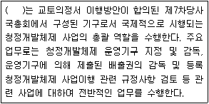
- 국가 CDM 승인기구(DNA)
- CDM 집행이사회(EB)
- CDM 사업운영기구(DOE)
- 당사국총회 (COP/MOP)
(정답률: 43%)
16. 녹색기후기금(GCF)에 관한 설명으로 가장 거리가 먼 것은?
- 환경분야의 세계은행이라 할 수 있다.
- 개도국의 온실가스 감축분야만 지원하는 기후변화관련 금융기구로서 더반에서 유치인준을 결정했다.
- 사무국은 인천 송도이다.
- GCF는 UN산하기구로서 Green Climate Fund의 약자이다.
(정답률: 91%)
17. 대류권 건조공기의 조성비율을 크기순으로 옳게 배열한 것은?
- CO2 ＞ O3 ＞ H2 ＞ CH4
- Ne ＞ CH4 ＞ CO ＞ I2
- CO2 ＞ CO ＞ H2 ＞ CH4
- CH4 ＞ Ne ＞ CO ＞ H2
(정답률: 60%)
18. 우리나라의 기후변화 취약성 평가방법에 관한 설명으로 옳지 않은 것은?
- 취약성 평가는 영향에 대한 가치판단이 배제된 개념이며, 과학적 불확실성은 포함되지 않는다.
- 하향식 접근법은 기후시나리오와 기후모형을 기반으로 하여 기후변화에 의한 순영향 평가를 통해 물리적 취약성을 평가하는 접근법이다.
- 상향식 접근법은 지역에 기반을 둔 여러 지표들을 바탕으로 하여 그 시스템의 적응능력을 평가함으로써 사회, 경제적인 취약성을 파악하는 접근법이다.
- 우리나라는 비교적 영향평가의 기초연구가 잘 진행된 분야(농업, 수자원, 산림, 보건 분야 등)에 일부 취약성 평가가 이루어져 왔다.
(정답률: 76%)
19. IPCC 5차 평가보고서에서 새롭게 제시된 기후변화 시나리오인 대표농도경로(RCP)의 시나리오별 대기 중 CO2(2100년 기준) 모의농도가 알맞게 연결된 것은?
- RCP 8.5 : CO2 농도 936ppm
- RCP 6.0 : CO2 농도 789ppm
- RCP 4.5 : CO2 농도 450ppm
- RCP 2.6 : CO2 농도 320ppm
(정답률: 80%)
20. 제2차 기후변화협약대응 종합대책에 포함되지 않은 것은?
- 의무부담 협상의 회피
- 온실가스 감축 시책의 지속적인 추진
- 교토메커니즘 대웅기반 구축 및 활용
- 민간부문의 참여유도 및 대응능력 제고
(정답률: 91%)
2과목: 온실가스 배출의 이해
21. 온실가스 배출권거래제의 배출량 보고 및 인증에 관한 지침상 합금철 생산공정에서 온실가스의 주된 배출시설은?
- 전기로
- 배소로
- 소결로
- 전해로
(정답률: 72%)
22. 온실가스 배출권거래제의 배출량 보고 및 인증에 관한 지침상 석유정제활동(석유정제 공정)의 온실가스 배출활동을 분류한 것으로 가장 거리가 먼 것은?
- 원유 예열시설, 증류공정 등에 열을 공급하기 위한 고정연소배출
- 수소제조공정, 촉매재생공정 및 코크스 제조공정 등 공정배출원
- 그 밖에 공정 중에서의 배기(venting) 및 폐가스 연소처리(flaring) 등 탈루성 배출
- 산⋅알칼리 조정을 위한 미세 활성탄 흡착처리시설
(정답률: 87%)
23. 온실가스 배출권거래제의 배출량 보고 및 인증에 관한 지침상 N2O를 산정하지 않는 처리시설은?
- 하수처리시설
- 폐수처리시설
- 혐기성 분해시설
- 폐가스 소각시설
(정답률: 53%)
24. 온실가스 배출권거래제의 배출량 보고 및 인증에 관한 지침상 단위 배출시설의 배출량이 60만tCO2/년인 전력 사용시설에 대하여 외부에서 공급된 전기 사용에 따른 온실가스 간접배출을 산정하고자 한다. 산정방법론, 전력사용량, 배출계수에 대한 산정등급(Tier)이 옳게 나열된 것은?
- 산정방법론 Tier 1, 전력사용량 Tier 2, 배출계수 Tier 2
- 산정방법론 Tier 1, 전력사용량 Tier 2, 배출계수 Tier 3
- 산정방법론 Tier 2, 전력사용량 Tier 3, 배출계수 Tier 3
- 산정방법론 Tier 3, 전력사용량 Tier 3, 배출계수 Tier 3
(정답률: 60%)
25. 온실가스 배출권거래제의 배출량 보고 및 인증에 관한 지침상 석유화학제품 생산 공정의 공정배출 보고대상 배출시설로 옳지 않은 것은?
- 메탄올 반응시설
- 하이드록실아민 반응시설
- 테레프탈산 생산시설
- 아크릴로니트릴 반응시설
(정답률: 76%)
26. 온실가스 배출권거래제의 배출량 보고 및 인증에 관한 지침상 질산 생산공정에서 배출되는 N2O에 관련된 설명으로 거리가 먼 것은?
- 암모니아 공정에서 형성되는 N2O의 양은 연소조건, 촉매 구성물과 사용기간, 연소기 디자인에 달려있다.
- N2O의 배출은 생산공정에서 재생된 양과 그 후의 완화공정에서 분해된 양에 따라 차이가 있다.
- 질산 생산 시 매개가 되는 N2O는 NH3를 30~50℃의 온도와 낮은 압력 하에서 N2O와 NO2로 분해된다.
- 질산 생산공정의 제1산화 공정에서 NH3의 촉매연소과정에서 N2O가 발생된다.
(정답률: 82%)
27. 온실가스 배출권거래제의 배출량 보고 및 인증에 관한 지침상 시멘트 생산의 배출활동에 관한 설명으로 옳은 것은?
- 시멘트 공정에서의 온실가스 배출원은 클링커의 제조공정인 소성 공정에서 탄산칼륨의 산화 반응에 의하여 이산화탄소가 배출된다.
- 시멘트 공정에서의 CO2 배출특성은 주원료인 석회석과 함께 점토 등 부원료의 사용량에 의한 영향이 소성시설(kiln)의 생석회 생성량과 연료사용량 및 폐기물 소각량에 의하여 받는 영향보다 크다.
- 연료 중 목재와 같은 바이오매스 재활용 연료의 경우 배출량 산정에서 제외하여야 하나 합성수지 및 폐타이어 등 폐연료의 경우는 배출량 산정 시 포함되어야 한다.
- CKD(소성로에서 발생되는 비산먼지)는 소성공정의 회수시스템에 의해 다량 회수되어 소성공정에 재사용되므로, 회수되지 못한 CKD 내 탄산염 성분은 탈탄산 반응에 포함되지 않으므로 보정이 필요 없다.
(정답률: 61%)
28. 온실가스 배출권거래제의 배출량 보고 및 인증에 관한 지침상 마그네슘 생산 공정의 보고대상 배출시설이 아닌 것은?
- 배소로
- 전기로
- 소성로
- 주조로
(정답률: 53%)
29. 온실가스 배출권거래제의 배출량 보고 및 인증에 관한 지침 상 활동자료에 대한 설명으로 ( )에 알맞은 것은?
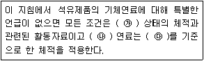
- ㉮ 275℃ 1기압, ㉯ 고체, ㉰ 15℃
- ㉮ 0℃ 1기압, ㉯ 액체, ㉰ 15℃
- ㉮ 0℃ 2기압, ㉯ 고체, ㉰ 25℃
- ㉮ 275℃ 2기압, ㉯ 액체, ㉰ 25℃
(정답률: 90%)
30. 온실가스 배출권거래제의 배출량 보고 및 인증에 관한 지침상 이동연소(선박) 배출활동의 온실가스 배출량 산정에 관련된 설명으로 옳지 않은 것은?
- 휴양용 선박에서 대형 화물선박까지 운항되는 모든 수상교통에 의해 배출되는 온실가스를 포함하여야 한다.
- Tier 2 산정방법은 선박종류, 연료종류, 엔진종류에 따라 배출량을 산정한다.
- Tier 3 활동데이터는 선박운항 및 휴항에 따른 연료종류, 선박종류, 선박에 탑재된 엔진 종류별 연료사용량을 활동자료로 하고, 측정불확도 ±2.5%이내의 활동자료를 사용한다.
- 선박부문의 온실가스 배출시설은 여객선, 화물선, 어선, 국제수상 운송(국제 벙커링) 및 기타 모든 수상시설을 포함한다.
(정답률: 66%)
31. 온실가스 배출권거래제의 배출량 보고 및 인증에 관한 지침상 고정연소(고체연료) 온실가스 보고대상 배출시설 중 공정연소시설에 해당하지 않는 시설은?
- 배연탈황시설
- 건조시설
- 가열시설
- 용융⋅융해시설
(정답률: 75%)
32. 온실가스 배출권거래제의 배출량 보고 및 인증에 관한 지침상 고형폐기물의 생물학적 처리유형 중 혐기성 소화과정에서 주로 발생되는 대표적인 온실가스는?
- 일산화탄소
- 아산화질소
- 육불화황
- 메탄
(정답률: 93%)
33. 온실가스 배출권거래제의 배출량 보고 및 인증에 관한 지침상 시멘트 생산과정에서 배출되는 공정배출을 산정하는 방법은 배출시설 규모에 따라 산정방법이 있다. 그 중에서 Tier 3의 배출량 산정에 필요한 활동데이터와 거리가 먼 것은?
- 클링커(Clinker) 생산량
- 시멘트 킬른 먼지(CKD) 반출량
- 원료투입량
- 순수탄산염 소비량
(정답률: 63%)
34. 휘발유 215L, 등유 750L, 경유 654 L의 에너지 환산량의 합(TJ)은? (단, 총발열량계수는 휘발유 33.5MJ/L, 등유 37.5MJ/L, 경유는 37.9 MJ/L이며, 단위는 TJ로 하고 소수점 넷째자리에서 반올림하여 계산한다.)
- 6.010
- 0.601
- 0.060
- 0.006
(정답률: 87%)
35. 다음 ( )에 가장 적합한 내용은?
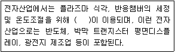
- 백금화합물
- 질소화합물
- 불소화합물
- 구리화합물
(정답률: 75%)
36. 온실가스 배출권거래제의 배출량 보고 및 인증에 관한 지침 상 K업체 소유 항공기의 온실가스 배출량 산정 시 운항실적에 따른 LTO 횟수가 알맞은 것은?
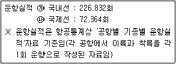
- 598,932회
- 453,664회
- 149,598회
- 113,416회
(정답률: 78%)
37. 온실가스 배출권거래제의 배출량 보고 및 인증에 관한 지침상 하⋅폐수 처리의 가축분뇨 공공처리시설에서 배출되는 온실가스 종류의 조합으로 맞는 것은?
- CO2, CH4
- CO2, N2O
- CO2, CH4, N2O
- CH4, N2O
(정답률: 58%)
38. 온실가스 배출권거래제의 배출량 보고 및 인증에 관한 지침상 폐기물 소각시설 중 열분해시설의 생성물질에 따른 성상분류로 거리가 먼 것은?
- 가스화 방식
- 액화방식
- 용융방식
- 탄화방식
(정답률: 30%)
39. 온실가스 배출권거래제의 배출량 보고 및 인증에 관한 지침상 제품 등의 생산공정에 사용되는 특정시설에 열을 제공하거나 장치로부터 멀리 떨어져 이용하기 위해 연료를 의도적으로 연소시키는 시설은?
- 공정배출시설
- 대기오염물질 방지시설
- 스팀사용시설
- 공정연소시설
(정답률: 76%)
40. 온실가스 배출권거래제의 배출량 보고 및 인증에 관한 지침상 석탄 채굴 및 처리 활동에서의 탈루성 보고대상 온실가스로만 모두 옳게 나열한 것은?
- CO2
- CH4
- N2O, CO2, CH4
- CH4, N2O
(정답률: 66%)
3과목: 온실가스 산정과 데이터 품질관리
41. 온실가스 배출권거래제의 배출량 보고 및 인증에 관한 지침상 배출량에 따른 시설규모 분류기준 중 연간 배출량이 가장 많은 배출시설이 속한 그룹은?
- A 그룹
- B 그룹
- C 그룹
- D 그룹
(정답률: 81%)
42. 온실가스 배출권거래제의 배출량 보고 및 인증에 관한 지침상 시멘트 생산과정에서 배출되는 온실가스의 발생 반응식으로 가장 적합한 것은?
- CaCO3 + H2SO4 → CaSO4 + CO2 + H2O
- 2NaHCO3 + Heat → Na2CO3 + CO2 + H2O
- CH4 + 2O2 → CO2 + 2H2O
- CaCO3 + Heat → CaO + CO2
(정답률: 80%)
43. Scope 1과 Scope 2에 관한 설명으로 옳은 것은?
- 전기, 스팀 등의 구매에 의한 외부에서의 온실가스 배출은 Scope 1에 해당된다.
- 중간 생성물의 저장, 이송과정에서의 온실가스 배출은 Scope 2에 해당된다.
- 배출원 관리 영역에 있는 차량운행을 통한 온실가스 배출은 Scope 2에 해당된다.
- 화학반응을 통한 부산물로서의 온실가스 배출은 Scope 1에 해당된다.
(정답률: 65%)
44. 온실가스 배출권거래제의 배출량 보고 및 인증에 관한 지침상 구매한 연료 및 원료, 전력 및 열에너지를 정도검사를 받지 않은 내부측정기기를 이용하여 활동자료를 분배⋅결정하는 모니터링 유형은?
- A-1
- A-2
- C-1
- D-5
(정답률: 74%)
45. 온실가스 배출권거래제의 배출량 보고 및 인증에 관한 지침상 납 생산에 대한 온실가스 배출량 산정을 산정하는 방법에 대한 설명으로 옳지 않은 것은?
- 보고대상 온실가스는 CO2와 CH4이다.
- 배출량 산정방법론으로 Tier 1~4까지 4가지 방법론이 있다.
- Tier 1 방법론은 생산된 납의 양(t)에 납생산량 당 배출계수(tCO2/t-생산된 납)를 곱하여 배출량을 산정하는 방법이다.
- Tier 3 방법론 적용을 위해서는 사업자가 자체적으로 고유 배출계수를 개발하여 적용하여야 한다.
(정답률: 55%)
46. 온실가스 배출권거래제의 배출량 보고 및 인증에 관한 지침에 따라 Tier 2a에 따른 반도체/LCD/PV 생산부문에서 온실가스 배출량 산정방법에 관한 설명으로 옳지 않은 것은?
- 가스 소비량과 배출제어 기술 등 사업장별 데이터를 기반으로 사용된 각각의 FCs 배출량을 계산하는 방법이다.
- 적용된 변수들은 반도체나 TFT-FPD 제조공정에서 사용된 가스량, 사용 후에 Bombe에 잔류하는 가스량 등이다.
- 배출량 산정은 공정중 사용되는 가스 및 CF4, C2F6, C3F8 등의 부생가스까지 합산해야 한다.
- 식각⋅증착공정의 구분을 할 수 없거나 단일시설(식각 또는 증착)로 구성된 경우에는 적용할 수 없다.
(정답률: 72%)
47. 온실가스 배출권거래제의 배출량 보고 및 인증에 관한 지침에 따라 관리업체 A의 기체연료 고정연소시설 배출량이 621,000톤으로 산정되었다고 한다면, 온실가스 배출량 산정 방법론에 대한 최소 산정등급은?
- Tier 1
- Tier 2
- Tier 3
- Tier 4
(정답률: 60%)
48. 온실가스 배출권거래제의 배출량 보고 및 인증에 관한 지침에 따라 온실가스 측정 불확도를 산정하는 절차를 순서대로 옳게 나열한 것은?
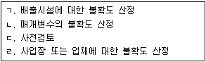
- ㄷ-ㄴ-ㄹ-ㄱ
- ㄷ-ㄴ-ㄱ-ㄹ
- ㄷ-ㄹ-ㄱ-ㄴ
- ㄷ-ㄱ-ㄴ-ㄹ
(정답률: 63%)
49. 온실가스 배출권거래제의 배출량 보고 및 인증에 관한 지침에 따라 화석연료의 고정연소와 이동연소로 인해 배출되는 온실가스와 거리가 먼 것은?
- 이산화탄소
- 메탄
- 아산화질소
- 육불화황
(정답률: 69%)
50. 온실가스 배출권거래제의 배출량 보고 및 인증에 관한 지침에 따른 배출활동별 온실가스 배출량 등의 세부산정방법 및 기준사항으로 ( )에 알맞은 것은?
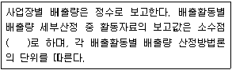
- 셋째자리에서 절사하여 둘째자리까지
- 셋째자리에서 반올림하여 둘째자리까지
- 넷째자리에서 절사하여 셋째자리까지
- 넷째자리에서 반올림하여 셋째자리까지
(정답률: 58%)
51. 에너지생산업체인 B사업장에서는 1년 간 유연탄을 200,000t 사용하였다. 온실가스 배출권거래제의 배출량 보고 및 인증에 관한 지침에 따라 Tier 1을 이용하여 산정한 온실가스 배출량(kgCO2-eq)은? (단, 산화계수는 1로 한다.)
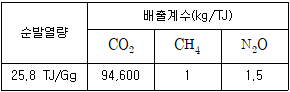
- 478,148,900
- 490,643,760
- 503,155,840
- 539,155,880
(정답률: 73%)
52. 온실가스 배출권거래제의 배출량 보고 및 인증에 관한 지침에 따라 고형폐기물의 매립시 배출량 산정과 관련한 매개변수별 관리기준에 관한 설명으로 옳지 않은 것은?
- 폐기물 성상별 매립량은 1981년 1월 1일 이후 매립된 폐기물에 대해서만 수집한다.
- Tier 1인 경우 메탄 회수량은 측정불확도 ±2.5% 이내의 메탄 회수량(회수한 LFG 중 순수메탄만을 회수량으로 활용한다) 자료를 사용한다.
- DOCf(메탄으로 전환가능한 DOC비율)는 IPCC 가이드라인 기본값인 0.5를 적용한다.
- F(메탄 부피비)는 실측 자료가 없을 경우 IPCC 가이드라인 기본값인 0.5를 적용한다.
(정답률: 71%)
53. 온실가스 배출권거래제의 배출량 보고 및 인증에 관한 지침상 연료 둥 구매량 기반 모니터링 방법에 대해서 설명하고 있다. 아래 유형은 어디에 해당하는가?
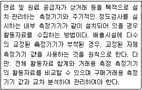
- A-1 유형
- A-2 유형
- A-3 유형
- A-4 유형
(정답률: 58%)
54. 온실가스 배출권거래제의 배출량 보고 및 인증에 관한 지침에 따라 B사업장에서 1년간 도시가스(LNG)를 58,970Nm3 사용했을 때 Tier 1을 이용하여 산정한 온실가스 배출량(tCO2-eq)은? (단, 발열량과 배출계수는 아래 표 참조)
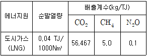
- 113.461
- 121.242
- 127.453
- 133.515
(정답률: 70%)
55. 온실가스 배출권거래제의 배출량 보고 및 인증에 관한 지침에 따른 품질관리의 목적으로 가장 거리가 먼 것은?
- 자료의 무결성, 정확성 및 완전성을 보장하기 위한 일상적이고 일관적인 검사의 제공
- 오류 및 누락의 확인 및 설명
- 배출량 산정자료의 문서화 및 보관, 모든 품질관리 활동의 기록
- 발생된 오류의 책임소재 파악
(정답률: 84%)
56. 온실가스 배출권거래제의 배출량 보고 및 인증에 관한 지침상 "고형폐기물의 생물학적 처리"에서 보고대상 배출시설에 해당하지 않은 것은?
- 사료화 시설
- 퇴비화 시설
- 차단형 매립시설
- 부숙토 생산시설
(정답률: 73%)
57. 온실가스⋅에너지 목표관리 운영 등에 관한 지침에 따른 배출량 산정원칙, 범위 등의 사항으로 옳지 않은 것은?
- 관리업체는 이 지침에 제시된 범위 내에서 모든 배출활동과 배출시설에서 온실가스 배출량 등을 산정하여야 하며, 온실가스 배출량 등의 산정에서 제외되는 배출활동과 배출시설이 있는 경우에는 그 제외사유를 명확하게 제시하여야 한다.
- 관리업체는 시간의 경과에 따른 온실가스 배출량 등의 변화를 비교⋅분석할 수 있도록 일관된 자료와 산정방법론 등을 사용하여야 한다.
- 관리업체는 온실가스 직접배출과 간접배출로 온실가스 배출유형을 구분하여 온실가스 배출량 등을 산정하여야 한다.
- 보고대상 배출시설 중 연간배출량(배출권 거래제의 경우 기준연도 온실가스 배출량의 연평균 총량)이 150tCO2-eq 미만인 소규모 배출시설이 동일한 배출활동 및 활동자료인 경우 부문별 관장기관의 확인 없이 자체적으로 배출시설 단위로 구분하여 보고하여야 한다.
(정답률: 86%)
58. 온실가스 배출권거래제의 배출량 보고 및 인증에 관한 지침에 따른 온실가스 배출량 산정등급에 관한 설명으로 옳지 않은 것은?
- Tier 2는 일정부분 시험⋅분석을 통하여 개발한 매개변수 값을 활용하는 배출량 산정방법론이다.
- Tier 3는 상당부분 시험⋅분석을 통하여 개발하거나 공급자로부터 제공받은 매개변수 값을 활용하는 배출량 산정방법론이다.
- Tier 2는 기본 산화계수, 발열량 등을 활용하여 배출량을 산정하는 기본방법론이다.
- Tier 4는 배출가스 연속측정방법을 활용한 배출량 산정방법론이다.
(정답률: 50%)
59. 온실가스 배출권거래제의 배출량 보고 및 인증에 관한 지침에 따른 배출활동별 온실가스 배출량 등의 세부산정방법 및 기준으로 옳지 않은 것은?
- 세부적인 온실가스 흡수량 등의 산정방법이 제시되지 않은 배출활동은 관리업체가 자체적으로 산정방법을 개발하여 온실가스 배출량을 산정하여야 한다.
- 석유제품의 기체연료에 대해 특별한 언급이 없으면 모든 조건은 0℃ 1기압 상태의 체적과 관련된 활동자료를 적용한다.
- 액체연료는 20℃를 기준으로 한 체적을 적용한다.
- 사업장 고유 배출계수 개발 시, 활동자료 측정주기와 동 활동자료에 대한 조성분석주기를 기준으로 가중평균을 적용한다.
(정답률: 76%)
60. 온실가스 배출권거래제의 배출량 보고 및 인증에 관한 지침에 따른 모니터링 계획 작성원칙 중 "조직경계 내 모든 배출시설의 배출활동에 대해 모니터링 계획을 수립⋅작성하여야 한다"는 원칙은?
- 준수성
- 일관성
- 투명성
- 완전성
(정답률: 66%)
4과목: 온실가스 감축관리
61. 교토메카니즘 종류 중 CDM에 대한 설명으로 올바르지 않은 것은?
- 교토의정서 상의 감축 의무국의 의무 이행수단으로 허용된 상쇄 프로그램
- 선진국들이 온실가스를 줄일 수 있는 여지가 상대적으로 많은 개발도상국에 투자해 얻은 감축분을 배출권으로 가져가거나 판매하는 제도
- CDM 활성화를 위하여 온실가스 감축의무가 없는 개도국이 직접투자 및 시행하는 사업도 CDM으로 인정
- 배출쿼터를 받은 온실가스 감축의무 국가 간에 배출쿼터의 거래를 허용한 제도
(정답률: 46%)
62. A업체는 2016년도에 온실가스⋅에너지 목표관리제의 관리업체로 최초 지정되었다. 이 경우 동 업체의 목표관리를 위한 기준연도 선정기준으로 옳은 것은?
- 2015년도
- 2013 ~ 2015년도
- 2011 ~ 2015년도
- 2006 ~ 2015년도
(정답률: 90%)
63. 이산화탄소 전환에 대한 설명 중 가장 관계가 적은 것은?
- 촉매화학적 이산화탄소 수소화 반응 분야
- 광에너지 및 태양열 활용 이산화탄소 전환 분야
- 이산화탄소 유래 고분자 제조 기술
- 개질 및 가스화 반응에서의 이산화탄소 활용 분야
(정답률: 34%)
64. CDM 사업의 추가성에 대한 설명으로 가장 거리가 먼 것은?
- 경제적 추가성 분석에 있어서 추가성 입증이 어려울 경우, 사업 활동을 방해하는 장벽분석을 통하여도 추가성을 입증할 수 있다.
- 추가성 검증은 기술적, 환경적, 경제적 추가성을 함께 고려하여 평가한다.
- 기술적 추가성을 고려하는 기준 중 하나는 해당사업 이외에도 다른 사업이나 분야에서 부수적인 기술 이전 효과의 기대이다.
- 온실가스 배출원에 의한 인위적 배출량은 등록된 CDM 프로젝트 활동이 부재할 경우 발생하는 수준 이하로 감축되는 성질을 말한다.
(정답률: 24%)
65. 과거실적 기반의 목표 설정방법의 신⋅증설 배출시설에 대한 배출허용량을 고려할 사항으로 잘못된 것은?
- 해당 신⋅증설 시설에 대한 활동자료 당 최대 배출량
- 해당 신⋅증설 시설의 목표설정 대상연도의 예상 가동시간
- 해당 신⋅증설 시설의 설계용량 및 부하율(또는 가동률)
- 해당 업종의 목표설정 대상연도 감축률
(정답률: 38%)
66. 연료전지의 발전시스템 구성요소에 관한 설명으로 ( )에 가장 적합한 것은?
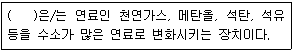
- 스택
- 단위전지
- 전력변환기
- 연료개질기
(정답률: 92%)
67. 온실가스⋅에너지 목표관리 운영 등에 관한 지침상 조기감축실적을 인정함에 있어 고려되어야 할 기준과 해당사항에 관한 설명으로 거리가 먼 것은?
- 조기감축실적은 국내에서 실시한 행동에 의한 감축분에 한하여 그 실적을 인정한다.
- 조기감축실적은 관리업체의 조직경계 안에서 발생한 것에 한하여 그 실적을 인정한다. 다만, 복수의 사업자가 참여하여 조직경계 외에서 실적이 발생한 경우에는 이를 인정할 수 있다.
- 조기감축실적은 배출시설 단위에서의 감축분에 대해서만 인정된다.
- 조기감축실적으로 인정되기 위해서는 조기행동으로 인한 감축이 실제적이고 지속적이어야 하며, 정량화 되어야 하고 검증 가능하여야 한다.
(정답률: 52%)
68. 다음 설명에 해당하는 가장 적합한 기술은?
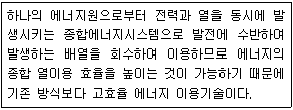
- IGCC
- 가스화 복합발전
- 열병합발전
- 석탄화력발전
(정답률: 88%)
69. 자동차 온실가스 저감기술이 아닌 것은?
- 마찰저항 저감과 경량화
- CO2를 냉매제로 사용한 에어컨시스템
- 에코타이어
- 에코브레이크
(정답률: 57%)
70. 석유정제공정 중 에너지 효율개선을 위한기술에 해당하지 않는 것은?
- 가스터빈, 열병합발전 등을 사용하고 효율이 낮은 보일러와 히터 등을 교체
- Stripping 공정에서 스팀의 사용 최적화
- 스팀생산에 연료소비저감을 위한 폐열보일러 사용
- 용매 보관용기로부터의 VOC 배출방지를 위한 기술적용
(정답률: 66%)
71. CCS(Carbon Capture and Storage)에 대한 설명으로 옳지 않은 것은?
- 간접감축 방법의 일종이다.
- CO2를 대기로 배출시키기 전에 고농도로 포집⋅압축⋅수송⋅저장하는 기술이다.
- 배기가스로부터 CO2만을 선택적으로 분리 포집하는 기술이다.
- 연소 후 포집, 연소 전 포집, 순산소 연소 포집기술로 구분할 수 있다.
(정답률: 78%)
72. 바이오매스 생산, 가공기술이 아닌 것은?
- 에너지 작물 기술
- 생물학적 CO2 고정화 기술
- 바이오매스 가스화 기술(열적전환)
- 바이오 고형연료 생산 및 이용기술
(정답률: 39%)
73. 온실가스 배출량 산정결과의 품질을 평가 및 유지하기 위한 일상적인 기술적 활동의 시스템인 품질관리의 목적으로 적정하지 않은 것은?
- 자료의 무결성, 정확성 및 완전성을 보장하기 위한 일상적이고 일관적인 검사의 제공
- 오류 및 누락의 확인 및 설명
- 배출량 산정자료의 문서화 및 보관, 모든 품질관리 활동의 기록
- 관리업체의 온실가스 감축목표 수립 지원
(정답률: 72%)
74. 택지개발 완료 후 사용되는 전기사용량에 따라 배출되는 온실가스 배출량(tonCO2/년)은? (단, 운영 시 전력사용량 = 138412 MWh/년, 전력 CO2 배출원단위 = 0.424kg/kW)
- 58386
- 58687
- 58988
- 59389
(정답률: 64%)
75. CDM 사업을 위한 모니터링 시스템 구축 내용에 관한 설명으로 옳지 않은 것은?
- CDM 사업의 최종목표는 CER을 발급받는 것으로 모니터링은 CDM 사업에 있어서 매우 중요한 과정으로 평가받고 있다.
- 모니터링 시스템의 신뢰성을 높이기 위해서는 계측기관리 절차서, 기록관리 절차서, 검사 및 시험 절차서, 교육 및 훈련 절차서, 문서관리 절차서, 시정 및 예방조치 절차서 등을 구축할 것을 검토하여야 한다.
- CDM 사업의 모니터링 계획 검증을 성공적으로 수행하기 위해서는 등록된 PDD에 대한 정확한 이해가 필요하며, CDM 사업 등록을 추진하는 조직과 모니터링을 담당하는 조직이 서로 다른 경우 등록된 PDD에 대한 내용을 담당 부서에게 명확하게 전달 및 교육을 하여야 한다.
- 계측되는 모니터링 데이터나 방법론이 PDD에 규정한 모니터링 인자의 단위와는 일부 일치하지 않을 수 있으므로 모든 데이터에 단위 명시를 하지 않는 것이 일반적이다.
(정답률: 92%)
76. 다음 설명에 부합되는 연료전지를 보기 중에서 고른 것은?
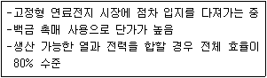
- 용융탄산염 연료전지(MCFC)
- 인산형 연료전지(PAFC)
- 고분자전해질 연료전지(PEMFC)
- 직접메탄올 연료전지(DMFC)
(정답률: 62%)
77. 포집한 이산화탄소의 영구적 또는 반영구적 저장기술의 구분과 가장 거리가 먼 것은?
- 지중저장기술
- 탱크저장기술
- 해양저장기술
- 지표저장기술
(정답률: 80%)
78. 온실가스 감축기술로 가장 거리가 먼 것은?
- 건물의 실내조명등을 백열등(60W)에서 LED등(12W)으로 교체
- 인쇄기드라이어에서 발생되는 폐열을 회수하기 위하여 열교환기를 설치하여 보일러를 사용하지 않아도 온수를 공급
- 식당, 기숙사, 복도 등에 설치되어 있는 자판기에 타이머를 달아 영업시간 외에는 가동을 중지
- 포장재로 종이가방을 제공하다가 비닐봉지로 대체
(정답률: 92%)
79. 온실가스 목표관리제의 기준년도 배출량에 대한 설명 중 틀린 것은?
- 기준연도는 관리업체가 최초로 지정된 연도의 직전 3개년으로 한다.
- 기준연도 기간 중 신⋅증설이 발생한 경우 해당 신⋅증설 시설의 기준연도 배출량은 최근 2개년 평균 또는 단년도 배출량으로 정할 수 있다.
- 관리업체의 최근 3개년 배출량 자료가 없는 경우에는 활용 가능한 최근 2개년 평균 또는 단년도 배출량을 기준연도 배출량으로 정할 수 있다.
- 기준년도 기간의 월평균 온실가스 배출량을 기준연도 배출량으로 한다.
(정답률: 44%)
80. 온실가스 에너지 목표관리 지침에 따른 관리업체의 이행실적보고서의 제출기한은?
- 12월 31일까지
- 9월 31일까지
- 6월 30일까지
- 3월 31일까지
(정답률: 43%)
5과목: 온실가스관련 법규
81. 온실가스 배출권거래제의 배출량 보고 및 인증에 관한 지침상 바이오매스로 취급되는 항목이 아닌 것은?
- 사탕수수
- 해조류
- 천연가스
- 음식물 쓰레기
(정답률: 80%)
82. 온실가스 배출권의 할당 및 거래에 관한 법령상 정부는 배출권거래제 도입으로 인한 기업의 경쟁력 감소를 방지하고 배출권 거래를 활성화하기 위하여 대통령령으로 정하는 사업에 대하여 금융상⋅세제상의 지원을 할 수 있는데, 이 대통령령으로 정하는 사업에 해당하지 않는 것은?
- 온실가스 감축모형 개발 및 배출량 통계 고도화 사업
- 온실가스 저장기술 개발 및 저장설비 설치 사업
- 온실가스 배출량에 대한 측정 및 체계적 관리시스템의 구축 사업
- 부문별 온실가스 배출량 증가 촉진 고도화 구축 사업
(정답률: 87%)
83. 할당대상 업체 지정 기준과 관련된 설명으로 적절하지 않은 것은?
- 할당대상업체는 관리업체 중 최근 3년간 온실가스 배출량의 연평균 총량이 12만5천이산화탄소상당량톤 이상인 업체이거나 2만5천이산화탄소상당량톤 이상인 사업장의 해당업체 중 지정 고시된 업체
- 관리업체 중 할당대상업체로 지정받기 위하여 신청한 업체
- 할당대상 업체 지정 시 최근 3년간이란 매 계획기간 시작 전부터 3년간을 말함
- 배출권거래제 할당대상 업체 신규진입자에 대한 최근 3년간은 신규진입자로 지정⋅고시하는 연도의 직전 3년간을 말함
(정답률: 62%)
84. 목표관리제의 관리업체 지정과 관련된 절차의 내용이 옳은 것은?
- 환경부장관은 지정 대상 관리업체의 목록 및 산정 근거를 매년 4월 30일까지 마련해야 한다.
- 환경부장관은 관리업체 선정의 중복⋅누락, 규제의 적절성 등을 확인하고 그 결과를 부문별 관장기관에게 통보한다.
- 환경부 장관은 매년 6월 30일까지 관리업체를 관보에 고시하여야 한다.
- 부문별 관장기관이 관리업체를 고시할 때에는 관리업체의 대략적인 배출량을 포함하여야 한다.
(정답률: 39%)
85. 품질관리(Quality Control) 활동 중 기초자료의 수집 및 정리에 대한 설명이 아닌 것은?
- 측정기기의 주기적인 검⋅교정 실시
- 내부감사 및 제3자 검증을 위한 온실가스 배출량 관련 정보의 보관⋅관리
- 산정방법론, 발열량, 배출계수의 출처 기록관리
- 내부감사 및 제3자 검증단계에서, 배출량 산정의 재현가능성 여부의 확인
(정답률: 73%)
86. 온실가스 배출권의 할당 및 거래에 관한 법령상 규정하고 있는 배출권 할당 취소 사유에 해당되지 않는 것은?
- 할당대상업체가 전체 또는 일부 사업장을 폐쇄한 경우
- 할당계획 변경으로 배출허용총량이 감소한 경우
- 할당대상업체의 시설 가동이 6개월 동안 정지된 경우
- 사실과 다른 내용으로 배출권의 할당 또는 추가 할당을 신청하여 배출권을 할당받은 경우
(정답률: 60%)
87. 정부는 자원순환의 촉진과 자원생산성 제고를 위하여 자원순환 산업을 육성⋅지원하기 위한 다양한 시책을 마련해야 한다. 이러한 시책에 해당하지 않은 것은?
- 국내외 경제여건 및 전망에 관한 사항
- 자원순환 촉진 및 자원생산성 제고 목표설정
- 폐기물 발생의 억제 및 재제조⋅재활용 등 재자원화
- 에너지자원으로 이용되는 목재, 식물, 농산물 등 바이오매스의 수집⋅활용
(정답률: 71%)
88. 상쇄배출권의 설명에서 ( )에 들어갈 내용으로 알맞은 것은?
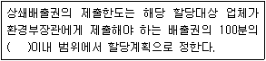
- 10
- 30
- 50
- 80
(정답률: 71%)
89. 검증기관이 국립환경과학원장에게 변경신고를 하여야 할 대상이 아닌 것은?
- 검증기관 사무실 소재지의 변경
- 검증관련 내부 업무규정의 변경
- 법인 및 대표자가 변경된 경우
- 검증기관 대표자의 주소가 변경된 경우
(정답률: 78%)
90. 관리업체의 소관 부문별 관장기관으로 잘못된 것은?
- 농림축산식품부 : 농업⋅임업⋅축산⋅식품 분야
- 산업통상자원부 : 산업⋅에너지 분야
- 환경부 : 폐기물 분야
- 국토교통부 : 건물⋅교통 분야(해운⋅항만 분야 제외)
(정답률: 74%)
91. 녹색성장위원회에서 심의하는 사항이 아닌 것은?
- 저탄소 녹색성장 정책의 기본방향에 관한 사항
- 지방자치단체 녹색성장책임관 지정에 관한 사항
- 녹색성장국가전략의 수립⋅변경⋅시행에 관한 사항
- 저탄소 녹색성장과 관련된 법제도에 관한 사항
(정답률: 60%)
92. 저탄소 녹색성장 기본법령상 관리업체가 목표관리를 받기 전에 자발적으로 행한 실적 중 검증기관의 검증을 받은 것은?
- 조기감축실적
- 외부감축실적
- 그린크래딧
- 배출권
(정답률: 84%)
93. 배출권거래제 기본계획에 포함될 내용이 아닌 것은?
- 배출권 거래제에 관한 국내외 현황 및 전망에 관한 사항
- 무역집약도 또는 탄소집약도 등을 고려한 국내 산업의 지원대책에 관한 사항
- 국가온실가스감축목표를 고려하여 설정한 온실가스 배출허용총량에 관한 사항
- 재원조달, 전문인력 양성, 교육⋅홍보 등 배출권거래제의 효과적 운영에 관한 사항
(정답률: 33%)
94. 저탄소 녹색성장 기본법령상 다음 연도 온실가스 감축, 에너지 절약 및 에너지 이용효율 목표를 통보받은 관리업체는 사업장별 생산설비 현황 및 가동률 등을 포함한 다음 연도 이행계획을 전자적 방식으로 언제까지 부문별 관장기관에게 제출하여야 하는가?
- 매년 3월 31일
- 매년 6월 30일
- 매년 9월 30일
- 매년 12월 31일
(정답률: 67%)
95. 신에너지 재생에너지 개발⋅이용⋅보급 촉진법령상 바이오에너지 등의 기준 및 범위에서 바이오에너지에 해당하는 범위로 거리가 먼 것은?
- 생물유기체를 변환시킨 바이오가스, 바이오에탄올, 바이오액화류 및 합성가스
- 동물⋅식물의 유지를 변환시킨 바이오디젤
- 쓰레기 매립장의 유기성 폐기물을 변환시킨 매립지 가스
- 해수 표층의 열을 변환시켜 얻는 에너지
(정답률: 83%)
96. 온실가스⋅에너지 목표관리 운영 등에 관한 지침상 용어 정의 중 관리업체가 법 및 시행령에 따른 목표관리를 받기 이전에 자발적이고 추가적으로 온실가스 감축을 위하여 행한 일련의 행동을 의미하는 것은?
- 자율행동
- 조기행동
- 조직행동
- 관리행동
(정답률: 72%)
97. 국내 온실가스 배출권 거래제도에서 할당대상 업체로 지정된 업체가 온실가스 배출권 할당 신청을 해야 하는 시기로 옳은 것은?
- 매 계획기간 시작 3개월 전(신규 진입자는 배출권을 할당받은 이행연도 시작 3개월 전)
- 매 계획기간 시작 4개월 전(신규 진입자는 배출권을 할당받은 이행연도 시작 4개월 전)
- 매 계획기간 시작 5개월 전(신규 진입자는 배출권을 할당받은 이행연도 시작 3개월 전)
- 매 계획기간 시작 5개월 전(신규 진입자는 배출권을 할당받은 이행연도 시작 4개월 전)
(정답률: 44%)
98. 온실가스 배출권거래제의 배출량 보고 및 인증에 관한 지침상 배출시설의 배출량에 따른 시설규모 분류 중 A그룹에 해당하는 시설규모 분류기준은?
- 연간 5만 톤 미만의 배출시설
- 연간 15만 톤 이상의 배출시설
- 연간 5만 톤 이상, 연간 50만 톤 미만의 배출시설
- 연간 50만 톤 이상의 배출시설
(정답률: 88%)
99. 녹색성장위원회의 구성 및 운영에 대한 설명으로 맞지 않는 것은?
- 위원회는 위원장 1명을 포함한 50명 이내의 위원으로 구성한다.
- 위원장은 각자 위원회를 대표하며, 위원회의 업무를 총괄한다.
- 위원회에 간사위원 1명을 둔다.
- 위원의 임기는 1년으로 하되, 연임할 수 있다.
(정답률: 67%)
100. 온실가스 배출시설의 배출량에 따른 시설규모 분류 중 C 그룹에 해당하는 시설은?
- 연간 5만톤 미만의 배출시설
- 연간 5만톤 이상, 연간 25만톤 미만의 배출시설
- 연간 25만톤 이상, 연간 50만톤 미만의 배출시설
- 연간 50만톤 이상의 배출시설
(정답률: 76%)